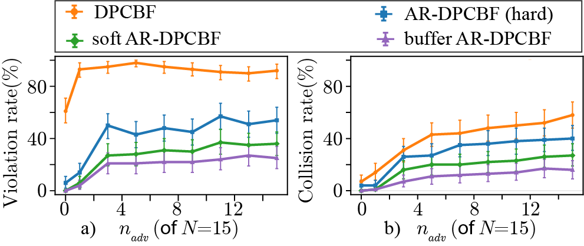
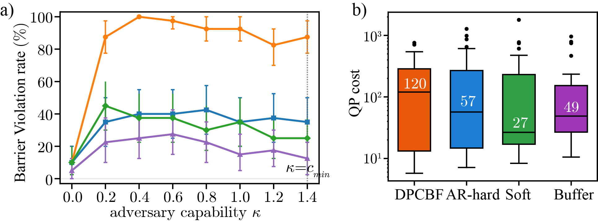

Experimental Evaluation
Each animation compares four controllers under the same obstacle realization and identical adversarial maneuvers. Only the controller changes, enabling a direct comparison of their robustness and feasibility.
Conventional DPCBF Fails Under Obstacle Maneuvers

Conventional DPCBF fails once nearby obstacles maneuver, whereas all AR-DPCBF variants successfully compensate for the bounded adversarial motion and safely reach the goal.
Soft Barrier Relaxation Preserves Feasibility

Hard AR-DPCBF becomes overly conservative in this scenario, whereas the proposed soft formulations maintain feasibility while preserving safe navigation.
Buffer Soft AR-DPCBF Achieves the Highest Robustness

Under the most challenging adversarial maneuvers, only Buffer Soft AR-DPCBF retains sufficient safety margin to complete the task without collision.
Quantitative Performance
The qualitative improvements are consistently reflected across randomized environments with varying adversarial populations and maneuvering capabilities.

Increasing the number of adversarial obstacles substantially degrades conventional DPCBF, whereas the proposed formulations consistently reduce both barrier violations and collisions.

Buffer Soft AR-DPCBF maintains the lowest barrier violation as obstacle capability increases while requiring substantially lower optimization cost than the hard formulation.